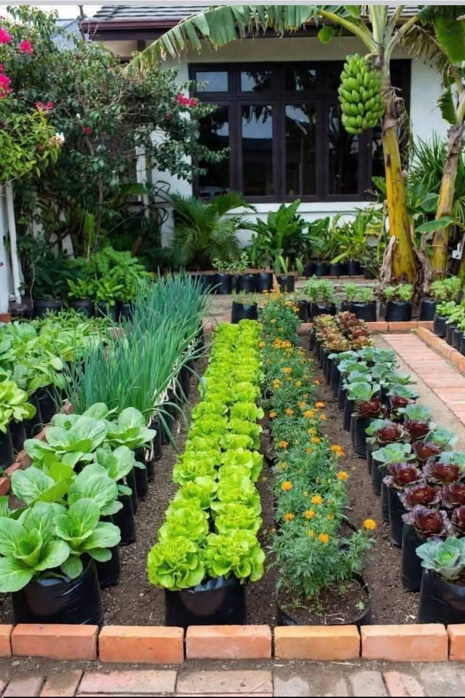
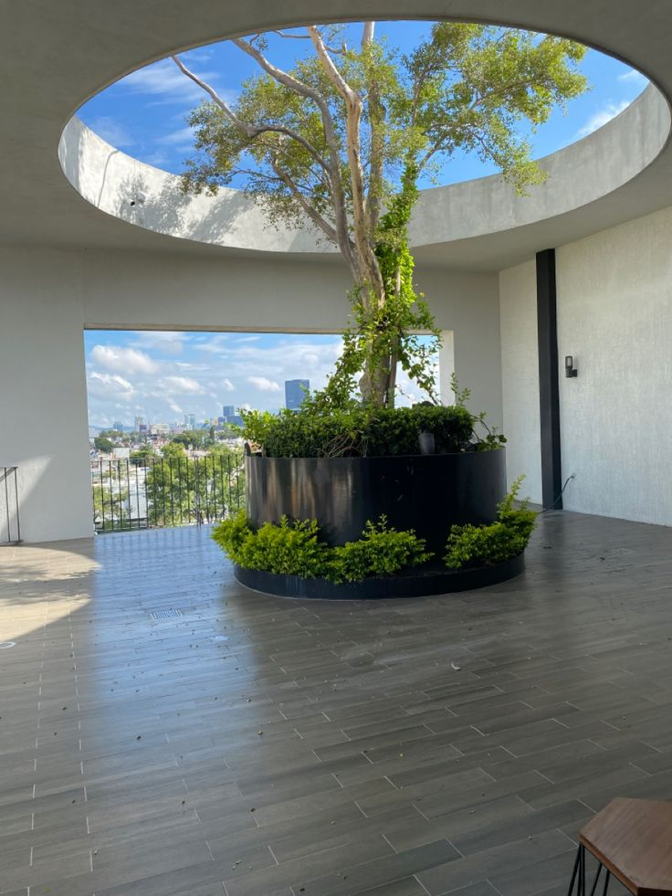
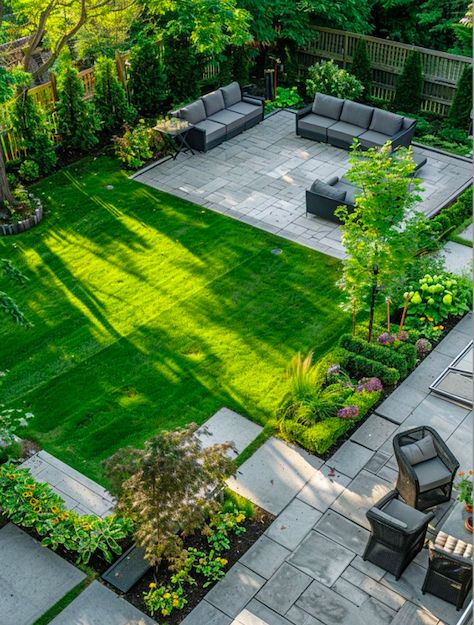
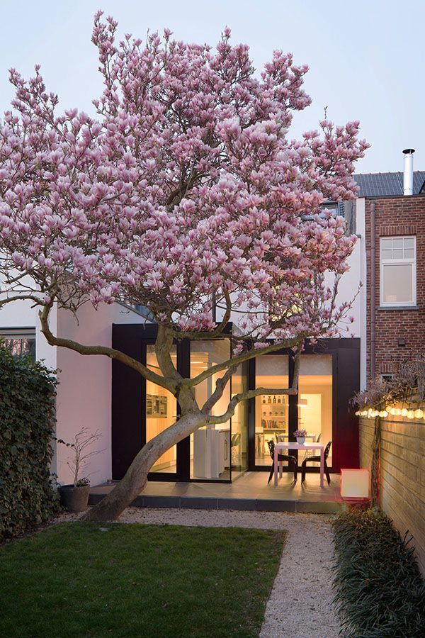
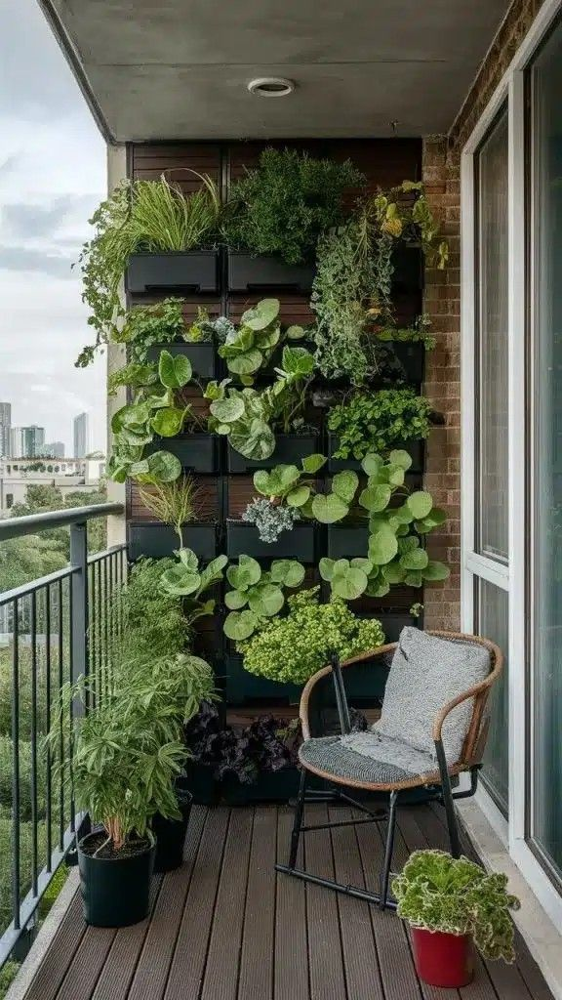

Diseños de Jardín
Creamos propuestas naturales y decorativas para jardines pequeños, grandes, interiores, terrazas y espacios modernos.

Jardín Ecológico
Diseño pensado para aprovechar recursos naturales, incluir plantas resistentes y crear un espacio verde de bajo mantenimiento.

Jardín para Edificios
Propuestas ideales para entradas, terrazas, balcones o áreas comunes, combinando plantas decorativas y distribución funcional.

Jardín Grande
Diseño amplio con zonas verdes, senderos, plantas ornamentales y espacios para descanso o convivencia familiar.

Jardín Zen
Inspirado en la tranquilidad y armonía, ideal para espacios minimalistas con piedras, plantas y decoración natural.

Jardín Pequeño
Soluciones para casas pequeñas, patios reducidos o esquinas verdes, aprovechando cada espacio disponible.

Jardín Vertical
Diseño perfecto para muros, pasillos o espacios interiores donde se desea agregar vegetación sin ocupar mucho espacio.